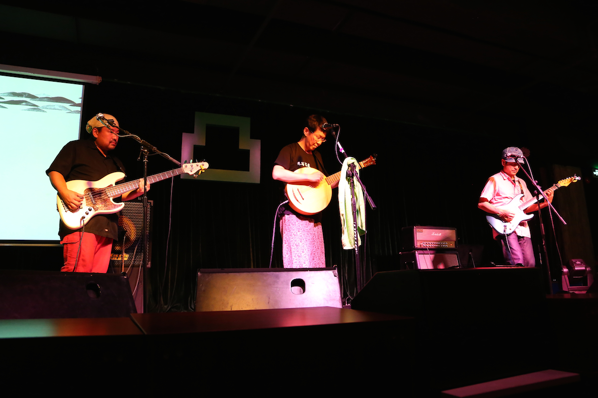
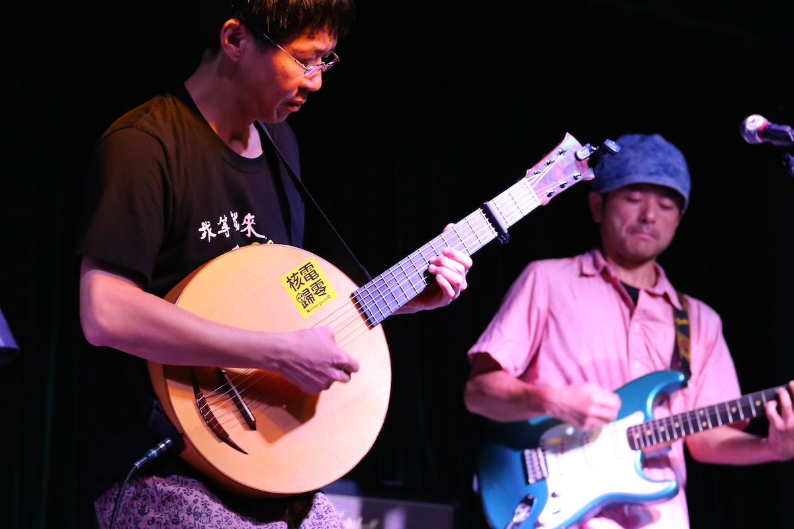
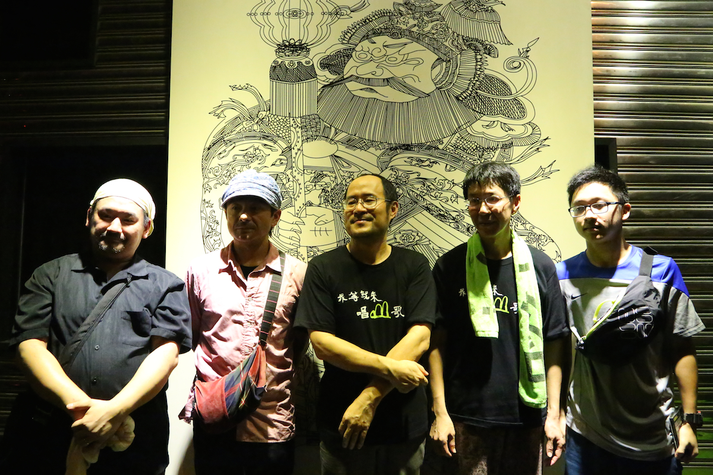
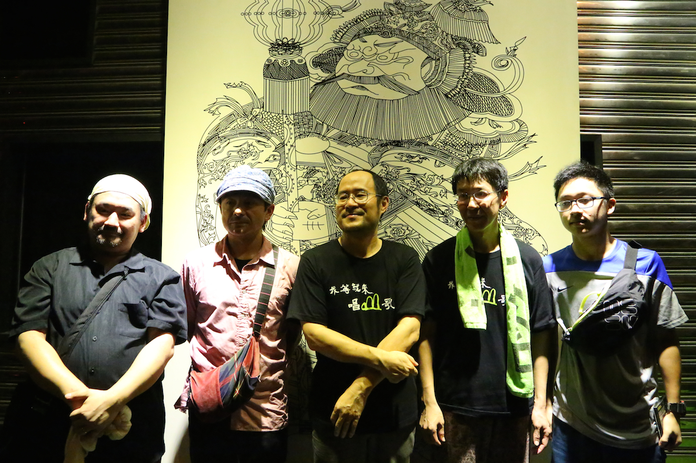

6月份生祥乐队来广州巡演，有幸去听了他们在方所的讲座和凸空间的演出。在方所的讲座，生祥和钟永丰聊到了很多创作背后的故事，生祥说他以前其实不太愿意做讲座，现在有了女儿，对教育问题也关心起来，想到现在出来相当于是在做社会教育，对讲座也就不像以前那样排斥了。   在北京的时候，也去听过林生祥的现场，是上一张专辑《大地书房》的巡演，北京听林生祥的人群和广州现场的人群还是有很大区别，在广州的现场，有很多做乡村保育，社区教育的社工组织组团来听，还有特别多的客家人，很多人可能之前对乐队也不是特别了解，比如讲座的时候视频里放《菊花夜行军》，台下就有好些观众看见“菊花”两个字，就笑起来了。可能来现场的大部分人更看重的是生祥乐队他们的音乐和行动对社运活动的影响，以及对客语文化的传承。相比而言，北京的听众大概因为语言不通的缘故，来现场的大多只是因为他们音乐本身。  前些日子看见一条悲哀的新闻，说随着城镇化发展，人口都在向城镇转移，很多村落人去楼空。据说，最近10年来，我国每天就有近百个村庄消亡。这个数字真的是有点触目惊心，每天哦，好像有种濒危动物的感觉。很多农村，村里壮劳力基本都在外打工，不少家庭都是老人孩子留守，房子常年无人照管，年久失修，最后成了危房。为了改善居住条件，只能进城，或者依赖村里安排的搬迁安置房，但这样一来，原来村子的人就越来越少了。有村民说，要是人都走了，村子也就死了。讲座那天，开头放了一小段视频，讲美浓的，就会觉得这个村庄真的太美了，而且村庄的生活设施也很齐全，并没有我们理解的在村里生活，为了体验这样的原生态的生活方式，你就一定得放弃一些生活上的便利之类，比如美浓已经有多家7.11这样的便利店，在生活便利方面，其实跟城里并没有太大差别。但在大陆好像很难找到这样的农村。 讲座那天有人提到大陆农村的水坝建得到处都是，他们这些乡村保育人士看在眼里非常心寒，但却觉得自己做不了什么，村民一方面意识还没有到那一步，另一方面就算反抗了也没有用，于是问钟永丰老师，该怎么办。钟永丰说，有一年他去美国参观第一个反水库运动成功的地方，那里的水库已经被拆掉，几乎看不出以前是座水库，但从当地人开始反抗到最终拆掉水库，前后也一共用了30多年的时间，于是他说我们要做的是回到农村，和农民生活在一起，才能真正理解他们，不要总是把自己当成救世主，也不要期望短期内就能看到成果，现在是播种的时期，大陆比台湾大概晚了几十年，必然需要经历几十年一代甚至两代人的努力才能有整体意识的变化。  前些日子跟朋友小聚，聊到他们回到老家一座北方的煤矿小城市，发现原来那座城的下方已经被挖空了，于是整座城都挪到了旁边一处新的地方。我庄在哪里，很多漂泊异乡的人，可能最后会发现，故乡已经回不去了，或者若干年后他回到的是一个完全陌生的故乡。不要说村庄在消失，很多城市也一样，在巨大的发展和变化面前，很多过往的东西都在消失。我自己也有这样的陌生感，每次回老家，进城的那段路都会让我异常陌生，那是在郊区开拓出来的新城，这让童年时代住在旧城区的我在下高速路进城之后很长一段时间，仍然感觉陌生。只有回到老城区，才能发现回忆中的有些小店有些路口还是熟悉的样子熟悉的名字，故乡的感觉直到这个时候才扑面而来，偶尔也会鼻子发酸。比起北方的那位朋友，我已经很幸运了。
前些日子看见一条悲哀的新闻，说随着城镇化发展，人口都在向城镇转移，很多村落人去楼空。据说，最近10年来，我国每天就有近百个村庄消亡。这个数字真的是有点触目惊心，每天哦，好像有种濒危动物的感觉。很多农村，村里壮劳力基本都在外打工，不少家庭都是老人孩子留守，房子常年无人照管，年久失修，最后成了危房。为了改善居住条件，只能进城，或者依赖村里安排的搬迁安置房，但这样一来，原来村子的人就越来越少了。有村民说，要是人都走了，村子也就死了。讲座那天，开头放了一小段视频，讲美浓的，就会觉得这个村庄真的太美了，而且村庄的生活设施也很齐全，并没有我们理解的在村里生活，为了体验这样的原生态的生活方式，你就一定得放弃一些生活上的便利之类，比如美浓已经有多家7.11这样的便利店，在生活便利方面，其实跟城里并没有太大差别。但在大陆好像很难找到这样的农村。 讲座那天有人提到大陆农村的水坝建得到处都是，他们这些乡村保育人士看在眼里非常心寒，但却觉得自己做不了什么，村民一方面意识还没有到那一步，另一方面就算反抗了也没有用，于是问钟永丰老师，该怎么办。钟永丰说，有一年他去美国参观第一个反水库运动成功的地方，那里的水库已经被拆掉，几乎看不出以前是座水库，但从当地人开始反抗到最终拆掉水库，前后也一共用了30多年的时间，于是他说我们要做的是回到农村，和农民生活在一起，才能真正理解他们，不要总是把自己当成救世主，也不要期望短期内就能看到成果，现在是播种的时期，大陆比台湾大概晚了几十年，必然需要经历几十年一代甚至两代人的努力才能有整体意识的变化。  前些日子跟朋友小聚，聊到他们回到老家一座北方的煤矿小城市，发现原来那座城的下方已经被挖空了，于是整座城都挪到了旁边一处新的地方。我庄在哪里，很多漂泊异乡的人，可能最后会发现，故乡已经回不去了，或者若干年后他回到的是一个完全陌生的故乡。不要说村庄在消失，很多城市也一样，在巨大的发展和变化面前，很多过往的东西都在消失。我自己也有这样的陌生感，每次回老家，进城的那段路都会让我异常陌生，那是在郊区开拓出来的新城，这让童年时代住在旧城区的我在下高速路进城之后很长一段时间，仍然感觉陌生。只有回到老城区，才能发现回忆中的有些小店有些路口还是熟悉的样子熟悉的名字，故乡的感觉直到这个时候才扑面而来，偶尔也会鼻子发酸。比起北方的那位朋友，我已经很幸运了。